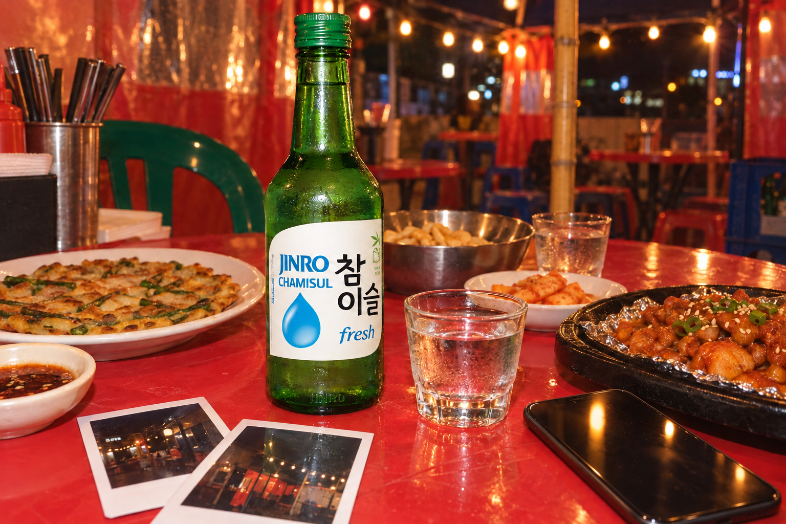
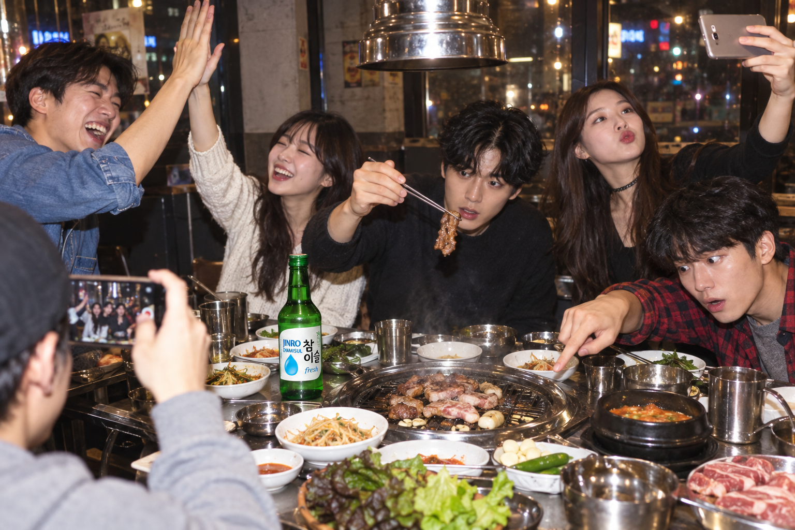

Bring Back 2016: The Viral Challenges and Memes We All Remember
2026 is the new 2016. From the Mannequin Challenge to the water bottle flip, here are the viral moments of 2016 worth bringing back with friends.
Dog-ear filters. Flower crowns. A Mannequin Challenge at every party. If your feed has been full of throwback photos this year, you already know: 2026 is the new 2016.
The trend took off on TikTok earlier this year, when people started posting their old 2016 photos with captions like “we’re back.” It quickly spread to Instagram. Ten years later, the songs, filters and party moments of that year are back on our feeds.
A big part of what made 2016 fun was the challenges and memes that seemed to reach every school, office and group chat. Here are five worth bringing back, with easy ways to recreate them with friends.

1. The Mannequin Challenge: Everyone Freeze
The rules were simple. Everyone in the room freezes mid-action, like a store mannequin, while one person walks through the scene filming. Most videos used the song “Black Beatles” by Rae Sremmurd.
It started with high school students in the fall of 2016, and within weeks, sports teams, offices and even TV shows were posting their own versions.
To recreate it, pick a busy moment at your next dinner. Someone mid-laugh, someone reaching for the grill, someone mid-selfie. Then hit record and walk slowly around the table.

2. The Water Bottle Flip: One Toss, One Perfect Landing
Toss a partly filled plastic water bottle so it flips in the air and lands standing upright. That is the whole challenge, and it kept people busy for months.
The trend took off after a high school student landed one at a talent show in the spring of 2016. Soon, it was everywhere from classrooms to live sports broadcasts.
The trick is to fill the bottle about a third of the way. Stick to plastic water bottles and give everyone three tries.

3. The Running Man Challenge: The Dance Anyone Could Do
Set to the song “My Boo” by Ghost Town DJ’s, the Running Man Challenge was a simple dance step that made it look like you were running in place.
It spread quickly after college basketball players posted their version, and teams across different sports soon joined in.
If your group did not learn it back then, there is a good chance at least one friend still remembers the steps. Let them lead.

4. PPAP: The Song Stuck in Everyone’s Head
“Pen-Pineapple-Apple-Pen” was a short, catchy song by Pikotaro, a character played by a Japanese comedian. The video was less than a minute long, and it spread around the world in the fall of 2016.
All you need to recreate it is a pen, an apple and a pineapple, or anything else on the table that works as a stand-in.
5. Pokémon GO: The Summer Everyone Went Outside
In the summer of 2016, parks and city streets filled with people looking at their phones, trying to catch Pokémon. Strangers ended up chatting in the same spots, and late-night walks became a group activity.
The game is still around. Plan a short walk with friends before dinner and see who catches the most along the way.
Bring Back 2016 with JINRO
Planning a 2016 night? Put on a playlist from that year, bring back the old photo filters and pick one challenge to start the night.
If you would like to add JINRO to the table, choose the one that fits your group. JINRO Chamisul Fresh keeps things clean, while fruit flavors such as JINRO Grapefruit, Peach and Strawberry add a fruity twist. Serve it chilled. Availability may vary by region.
The photos may look like 2016, but the moment you share with friends happens now.
For more JINRO stories, visit JINRO Global’s official Instagram, Facebook, and YouTube.
This article is intended for readers of legal drinking age. Please enjoy JINRO responsibly and in moderation, and never drink and drive.